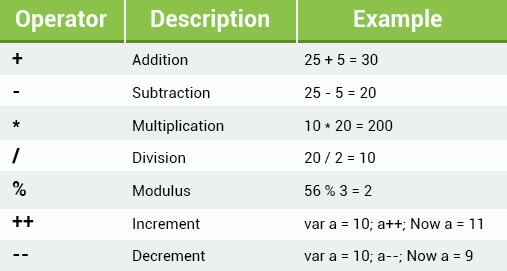
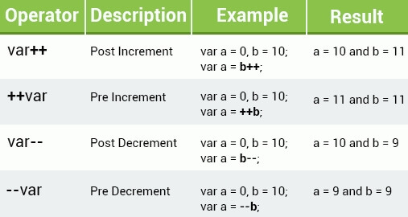
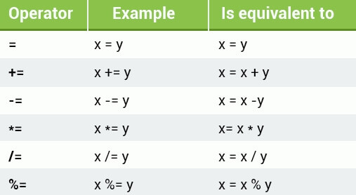

JavaScript 入门教程之二 -- 基本概念
数学运算符
有以下运算符可以使用：

加减运算使用方法很简单：
var b = 10 + 2;
var c = b - 3;
document.write(c);可以使用 eval() 来将计算结果转换为字符串形式：
var d = eval("10 + 2 + 1")
document.write(d);d 的结果就是 "13"。
乘法使用星号* 来表示，以下三种写法都是正确的：
var e = 2 * 3;
var f = 2 * '3';
var g = '2' * '3';
document.write(g);注意如果尝试对一个字符串进行乘法计算会返回：NaN (Not a Number)：
var h = 'hello' * 2;
document.write(h);
//output：
//NaN除法使用斜线/ 表示：
var i = 1 / 2;注意被除数不能为 0。
取模运算使用% 表示：
var j = 10 % 3;
document.write(j);
//output:
//1可以对整数和浮点型数字进行取模运算。
递增和递减：

使用++ 表示给对应变量进行加 1 运算，操作符写在变量前则返回加 1 后的值。写在后边返回加 1 前的值。
使用-- 表示给对应变量进行减 1 运算，操作符写在变量前则返回减 1 后的值。写在后边返回减 1 前的值
var k = 10;
var l = k++;
var m = ++l;
document.write(m);
//output:
//11分配符 Assignment Operators
可用的分配符有：

除了常规用法外，也可以在一行命令中使用多个分配符，例如：
var n = 4;
var o = 5;
o += n += 3;
document.write(o);
//output:
//12比较符 Comparison Operators
在逻辑判断中使用比较符来比较数据是否有区别。结果为 true 或 false。
例如可以使用 equal to (==) operator 来比较两个数据是否一样：
var p = 2;
document.write(p == 1);
//output:
//false所有的数据类型都可以进行比较，返回值只有 true 和 false。但需要注意比较的两个数据需要是同一类型的。
以下是可用的比较符：
逻辑判断符 Logical Operators
逻辑判断符用来评估一个表达式，返回结果为 true 和 false。可用的逻辑判断符为：AND, OR, NOT：
&&- AND 如果判断块都为 true，则返回 true||- OR 如果任何一个判断块为 true，则返回 true!- NOT 如果判断块为 false，则返回 true
下面的示例是对两个判断块进行 与AND 操作：
(4 > 2) && (1 < 3);以上两个判断块都为 true 则整个逻辑判断结果为 true。
状况判断符 Conditional (Ternary) Operator
状况判断符用来根据一些实际状态给某个变量赋值。语法如下：
variable = (condition) ? value1: value2
下面举例说明：
var age = 20;
var isAdult = (age < 18) ? "too young" : "old enough";
document.write(isAdult);
//OUTPUT:
//old enough以上示例中，如果 age 小于 18 则 isAdult 赋值为 "too young"，如果 age 大于等于 18 则 isAdult 赋值为 "old enough"。
字符串操作符 String Operators
我们可以使用级联符+ 来将多个字符串组合成一个新的字符串。例如：
var str1 = "this is a ";
var str2 = "test string";
document.write(str1 + str2);
//output:
// this is a test string注意一个数字使用引号括起来后就成了一个字符串，如："42" 表示一个字符串。。
标签：无